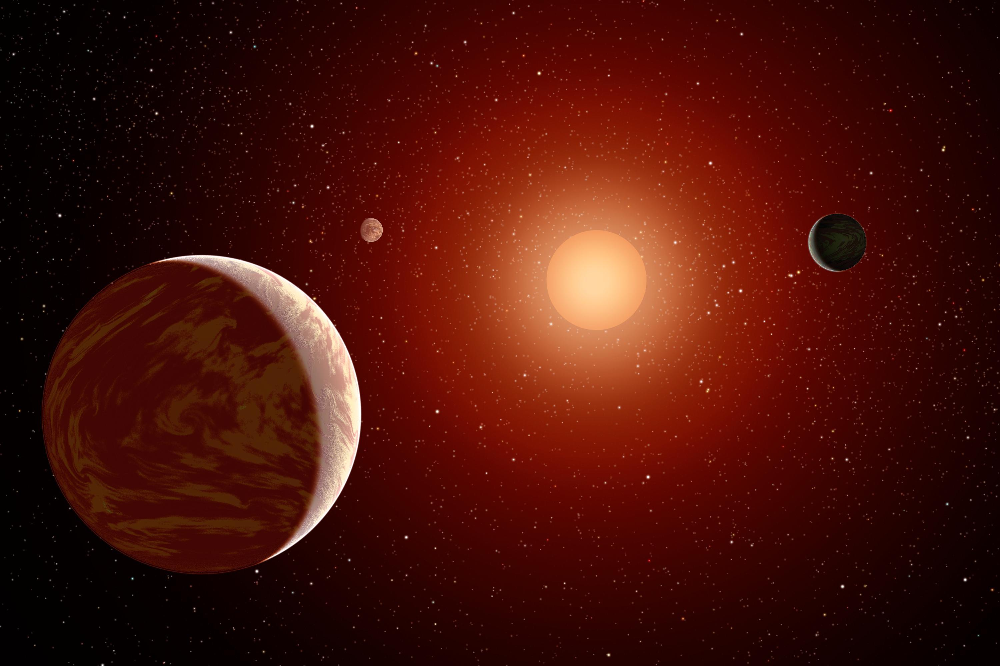
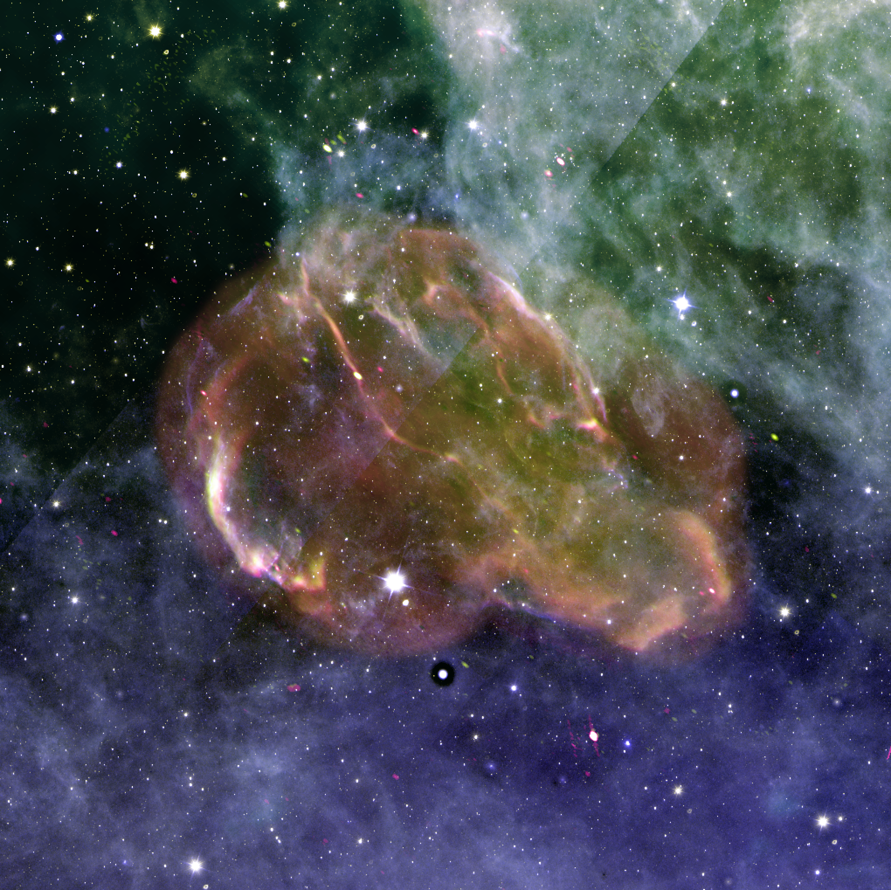

RESEARCH · NICOLE GROMEK
Exploring the Chemistry
of Stars and Planets
My research focuses on measuring the chemical compositions of cool, low-mass stars (M dwarfs) and exploring what their chemistry can tell us about the planets that form around them. Using high-resolution near-infrared spectroscopy, I develop methods to measure elements important to planetary interiors and atmospheres, then test how reliably those measurements can be recovered.
M-Dwarf Abundances & Exoplanet Composition
What can the chemical composition of a star tell us about the planets orbiting it? M dwarfs are among the most common stars in our Galaxy and host many known small exoplanets. Measuring their elemental abundances can help us investigate the materials available when planets form, from the iron and silicates of rocky interiors to carbon- and oxygen-bearing compounds.

Measuring the Chemistry of Cool Stars
I am developing a framework for determining individual elemental abundances from high-resolution near-infrared spectra of M dwarfs. Using observations from the SPIRou spectrograph and synthetic spectra generated with MARCS stellar atmospheres and Turbospectrum, I identify and fit atomic and molecular absorption features. This work includes careful line selection, spectral normalization, and assessment of uncertainties, all especially challenging in the crowded spectra of cool stars.
In our recent study, we applied this framework to SPIRou spectra of five nearby planet-host stars: GJ 9827, K2-18, TOI-1201, TOI-1685, and Barnard’s Star. We measured abundances of key planet-forming elements, including carbon, oxygen, magnesium, silicon, and iron, and examined ratios such as C/O, Mg/Si, and Fe/Mg. These measurements provide chemical reference points for interpreting the interiors and atmospheres of their planets, while recognizing that planetary compositions also depend on formation and evolution.
Calibrating M-Dwarf Abundances with Binary Stars
A key next step is to test and improve the accuracy of our measurements using wide binary systems containing an FGK star and an M dwarf. Because both stars are expected to have formed from the same material, they should share similar initial chemical compositions. Abundances measured from the better-understood FGK star can therefore provide an independent reference for its cool companion.
Our program has obtained high-resolution SPIRou spectra of 24 FGK–M binary systems. By comparing abundances within each pair, we aim to identify systematic offsets and calibrate M-dwarf measurements across a range of stellar temperatures and metallicities. Ultimately, this will help make the chemical characterization of M-dwarf exoplanet hosts more reliable.
The Cygnus Loop Supernova Remnant
During my undergraduate research in 2021–2022, including the University of Toronto’s Summer Undergraduate Research Program (SURP), I studied the Cygnus Loop, a well-known supernova remnant with an unusual shape: a roughly circular northern structure and an extended southern region. One possible explanation is that the original explosion expanded into a lower-density region; another is that the structure involves two overlapping supernova remnants.

I investigated the remnant using radio observations, where relativistic electrons emit synchrotron radiation in magnetic fields. I produced maps of its spectral index and Faraday rotation measure to look for differences in the emitting particles and magnetic-field properties across the structure. These measurements provide clues to the remnant’s morphology and evolution.
Read more about my project in the University of Toronto Astronomy SURP 2021 project archive ↗.